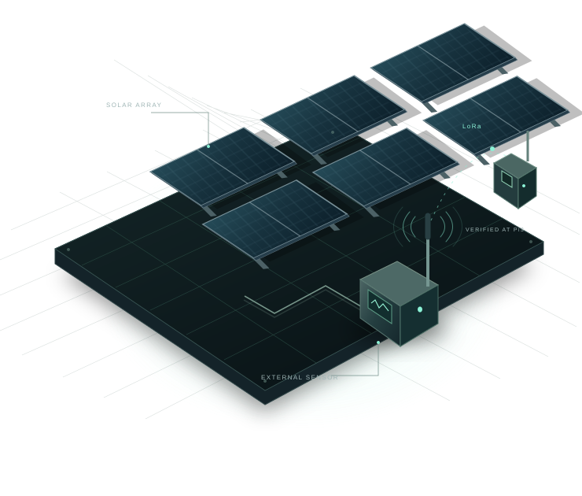

Listen to the physics.
Measure the target’s electrical activity with an external current sensor. No software agent runs on the monitored controller.
A NEW PERSPECTIVE ON DEVICE SECURITY
The software can tell one story.
The physics can tell another.
LayerOne watches the electrical activity behind connected devices — adding an independent layer of visibility to the infrastructure we depend on.

01 / A DIFFERENT VANTAGE POINT
Behind every solar panel, turbine, and connected machine is a controller making decisions. As it executes tasks, its electrical behavior changes.
LayerOne observes that behavior from the outside. It learns what normal looks like, flags sustained deviations, and sends the evidence through a separate radio path.
Follow the signalMeasure the target’s electrical activity with an external current sensor. No software agent runs on the monitored controller.
A robust baseline and two-sided CUSUM turn measured deviations into a signal worth investigating.
Signed and encrypted alerts travel over LoRa to a receiver that verifies the source before displaying the event.
02 / THE LAYERONE FILM
Meet the idea behind LayerOne.
From renewable energy to the physical signal.
The film also presents a future hardware-key evidence retrieval concept. The current MVP stores verified telemetry in SQLite and displays it on the central dashboard.
03 / FROM SIGNAL TO EVIDENCE
One independent path from a measured change
to an attributed alert.
CUSUM accumulates deviations from a learned baseline. Sustained changes trigger an alert; the operator investigates what caused them.
Each sensor holds its own Ed25519 signing key. The operator enrolls the public key on Pi3, so received alerts can be attributed to that node.
Node private key → signed frame → enrolled public key04 / BUILT. CONNECTED. MEASURED.
Our HackYeah prototype brings physical sensing, statistical detection, and authenticated radio together in one working system.
Read the setup manualReports live uptime and CPU temperature through signed, encrypted heartbeats.
Reads live Hantek/ACS measurements, learns the baseline, and generates CUSUM alerts.
Verifies signatures, decrypts packets, rejects duplicates, and displays the evidence.
MVP scope: a controlled ESP32 electrical workload demonstrates anomaly detection. A physical anomaly is a reason to investigate, not proof of malware. LoRa encryption does not prevent radio jamming.
ANOTHER LAYER OF VISIBILITY.
Start with the signal. Explore LayerOne.